Installing Jetson
Everything You Need to Set Up Your Development Environment
NVIDIA SDK Manager provides an end-to-end development environment setup solution for NVIDIA’s Jetson, Holoscan, Rivermax, DeepStream, GXF Runtime, Aerial Research Cloud (ARC-OTA), Ethernet Switch, RAPIDS, DRIVE and DOCA SDKs for both host and target devices.
Flow with Host Linux PC
Besides this default setup with microSD card, there is an optional setup flow in which you use a Linux host PC to run NVIDIA SDK Manager to flash an Jetson Linux image of selected JetPack version on your selection of primary storage medium (microSD card, NVMe SSD or USB drive) and/or install JetPack components of selected JetPack version using the host PC.
Prerequisite
In this description we follow the headless installation flow. Therefore you need.
- A Ubuntu based Host PC with enough hard disc space to cache the installation files. This is approximately 10 GB.
- USB Cable to flash the image
- Cable to bridge the jumper to set the Jetson in recovery mode
- Network first cable then WiFi
Get Started
-
DOWNLOAD and INSTALL
Installation on Ubuntu Ubuntu:
sudo apt install ./sdkmanager_[version]-[build#]_amd64.deb -
LAUNCH:
From a terminal window, launch SDK Manager with the command:
sdkmanager
How to Enter Force Recovery Mode on Jetson Orin Nano
- Locate the J14 Header Pins On the Jetson Orin Nano Developer Kit, find the J14 header—this is a row of pins near the edge of the board.
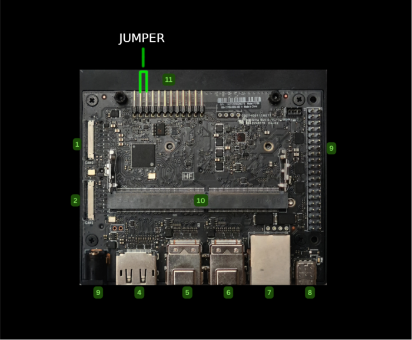
You’ll need to connect Pin 9 (FC REC) and Pin 10 (GND) using a jumper wire or a small jumper cap.
- Connect to Host PC Use a USB-C cable to connect the Jetson Orin Nano to your Ubuntu host PC (Ubuntu 20.04 or 22.04 is recommended).
Make sure the host has NVIDIA SDK Manager installed.
- Power On the Device With the jumper in place, power on the Jetson Orin Nano.
The device should now boot into Force Recovery Mode.
- Verify Recovery Mode On your host PC, open a terminal and run:
lsusb
You should see a line like:
Bus XXX Device XXX: ID 0955:7f21 NVIDIA Corp.
This confirms the Jetson is in recovery mode.
Why Use Recovery Mode?
Required for flashing JetPack via SDK Manager
Useful for recovering from boot failures
Allows firmware updates and low-level access
If you’re using a custom carrier board or a third-party enclosure, the pin layout might differ slightly—so always check the board’s documentation.
Hardware Setup
Connect NVIDIA Jetson Orin Nano Developer Kit to the PC with a USB Type-C cable.
While shorting the FC REC pin and GND pin of the 12-pin header under the module, insert the power supply plug into the DC jack.
This will turn on the Jetson dev kit in Force Recovery Mode .
Steps
Launch SDK Manger
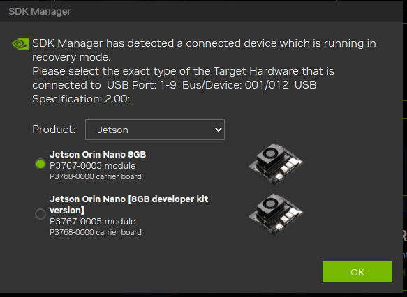
When asked select the target model of the Jetson model
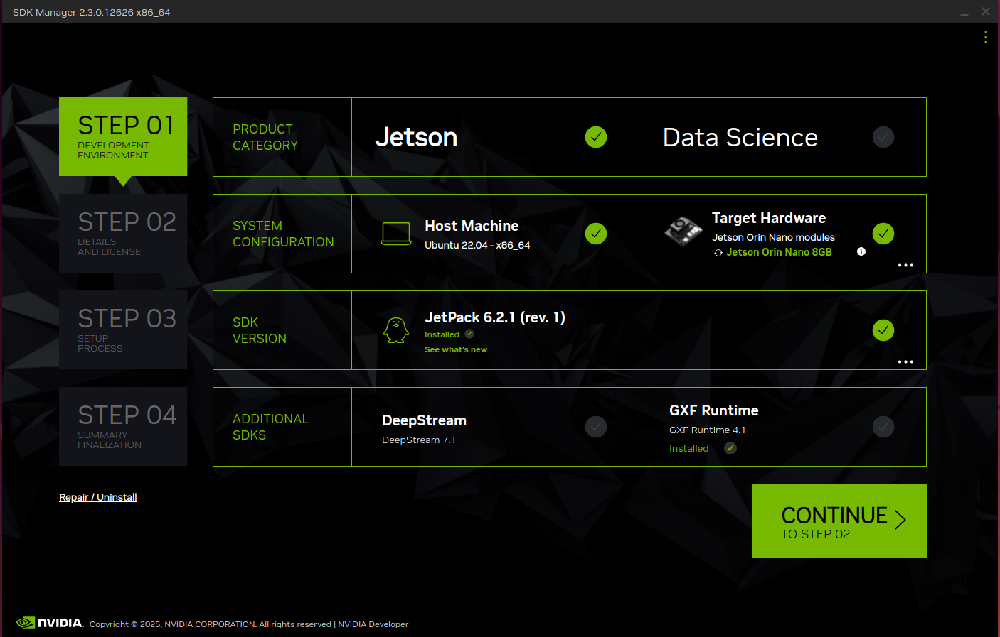
On the Step 01 Development Environment window;
- From the Product Category panel, select Jetson.
- From the Hardware Configuration panel select Jetson Orin Nano Developer Kit for Target Hardware.
Click CONTINUE button.
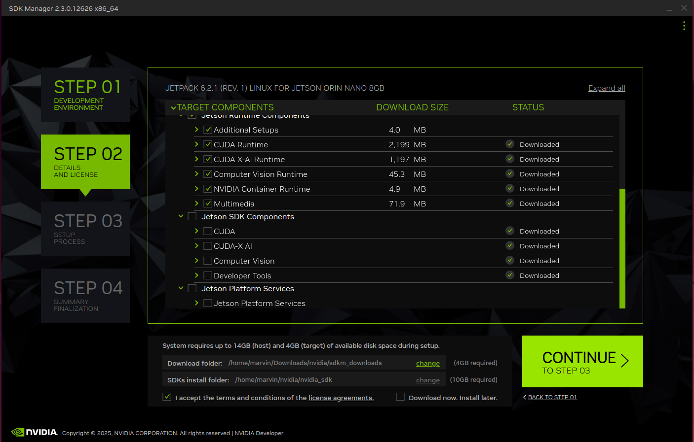
- From the Target Components panel, just select " Jetson OS " to install the base L4T BSP, and deselect "Jetson SDK Components".
- Review the license.
- Enable the checkbox to accept the license agreements.
Click CONTINUE button.
On the Step 02 Details and License window;
- Before the installation begins, SDK Manager prompts you to enter your sudo password.
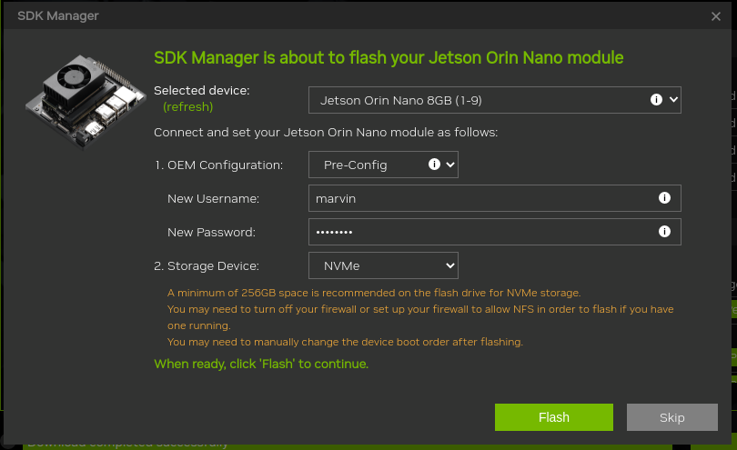
Click FLASH button.
After this actions we shall have a device with the ubuntu version running.
Most Likely Causes & Fixes
If the SDK Manager isn’t detecting your Jetson board, it’s usually due to one of these common culprits:
USB Connection Issues
Make sure you're using a data-capable USB cable (not just a charging cable).
Try different USB ports or cables.
Confirm the board is connected to the correct recovery port.
Recovery Mode Not Enabled
Jetson boards must be in Force Recovery Mode to be detected.
For most models, this involves shorting specific pins (e.g., FC REC to GND) or pressing a button combo during boot.
Host System Configuration
Run lsusb on your host machine. You should see something like NVIDIA Corp. APX (ID 0955:7023) if the board is in recovery mode.
If ls /dev/ttyACM* returns nothing, the board might not be properly connected.
Headless Setup (No Monitor Required)
In this flow we prepare the base image for network integration, so that the Jetson can operate via WiFi in the integration phase or in the robot.
If you don’t have a monitor, you can still access Jetson remotely from your laptop:
- Connect Jetson to your local network via a ethernet cable.
- Start ssh in a terminal to access the remote Jetson. The default name of the flashed installation is ubuntu
Rename the computer
renaming the computer to a target name
hostnamectl set-hostname ma3jet
Update the computer
Update computer
sudo apt update; sudo apt upgrade -y;
To see list of available WiFi hotspots (
nmcli d wifi list
Tip
If your system is set to the wrong country code, it may not scan all channels. Set it with (for Germany as an example):
sudo iw reg set DE
To see a list of all saved connections
nmcli c
if you want to connect to a network called PrettyFlyForAWiFi-5G
nmcli -a d wifi connect PrettyFlyForAWiFi-5G
-a (or --ask) means it will ask you for the password. The connection will be saved and should connect automatically if you restart your computer.
You could append password
nmcli d wifi connect PrettyFlyForAWiFi-5G password 12345678
nmtui ncurses solution
Great interactive ncurses network manager option which can run on a terminal:
nmtui
If for some reason it is not installed, the Debian package is:
sudo apt install network-manager
Comes in the same package as nm-applet (the default top bar icon thing) and nm-cli, and is therefore widely available.
Screenshot:
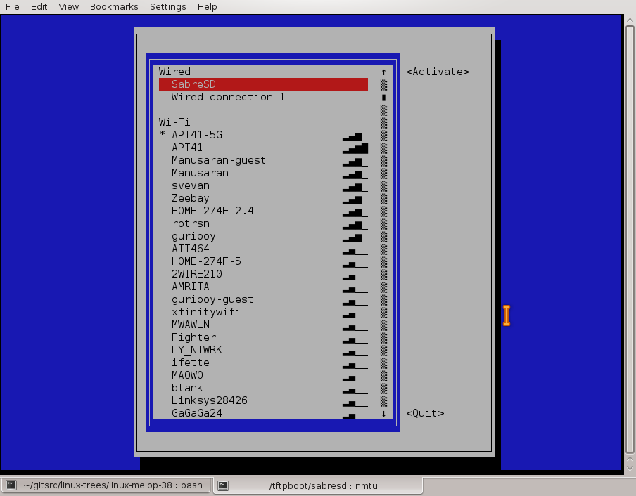
Check ip address from host
To check the connection ping from the host to the Jetson ip address
ping -4 ma3jet
PING (192.168.178.183) 56(84) bytes of data.
64 bytes from ma3jet.fritz.box (192.168.178.183): icmp_seq=1 ttl=64 time=0.870 ms
Persistent Regulatory Domain Setup
When the wifi connection is not compatible with the regulatory domain then the settings must be persisted.
This chapter describes the german region
Adjust the language to you needs
Create a systemd service:
sudo nano /etc/systemd/system/set-regdom.service
Add this content:
ini
[Unit]
Description=Set regulatory domain
After=network.target
[Service]
Type=oneshot
ExecStart=/sbin/iw reg set DE
RemainAfterExit=yes
[Install]
WantedBy=multi-user.target
Enable the service:
sudo systemctl enable set-regdom.service
This ensures your Jetson Nano always boots with the correct regulatory domain, avoiding channel mismatches with your region.
Install the NVIDIA SDKs
Now we can use the sdk manager on the host to install the missing SDKs.
Launch SDK Manger again
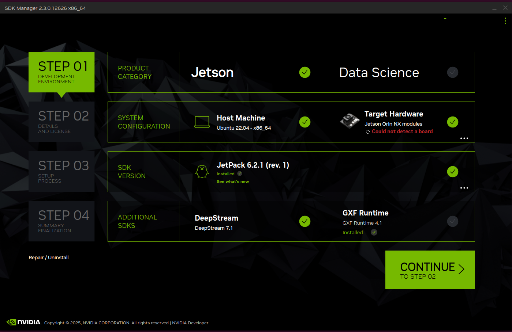
On the Step 01 Development Environment window;
- From the Product Category panel, select Jetson.
- Select installing to Host machine.
- From the Hardware Configuration panel select Jetson Orin Nano Developer Kit for Target Hardware.
- Select required SDK Versions here JetPack and DeepStream.
Click CONTINUE button.
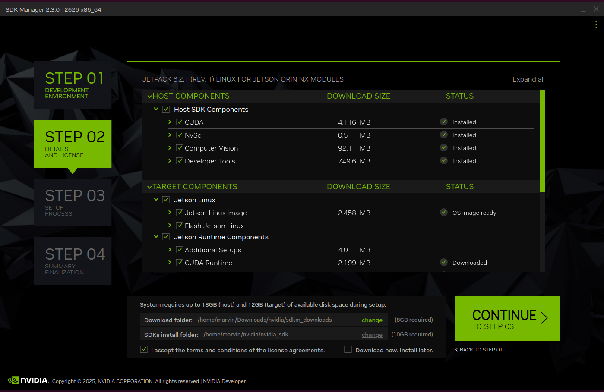
On the Step 02 Details and License window;
- Before the installation begins, SDK Manager prompts you to enter your sudo password.
Click CONTINUE button.
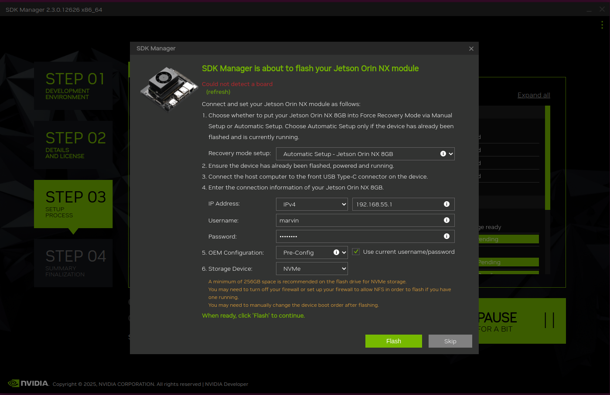
After the Step 02 Details how to connect to the Jetson are required.
- Specify the Jetson model and network parameter.
Click FLASH button.
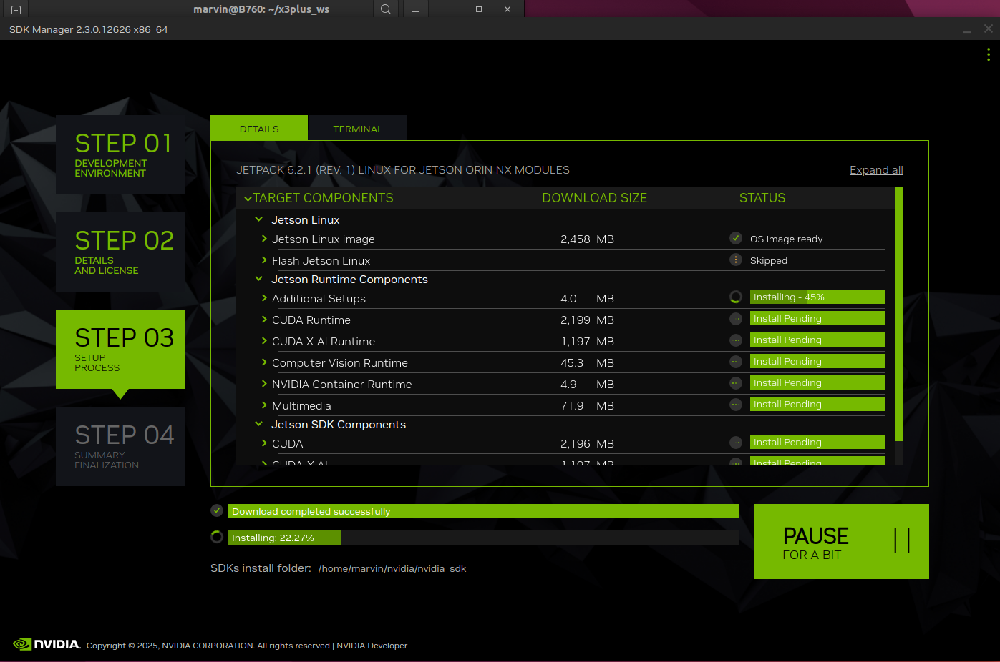
While installation of downloading and installing the SDKs on the Jetson device you can see the current status.
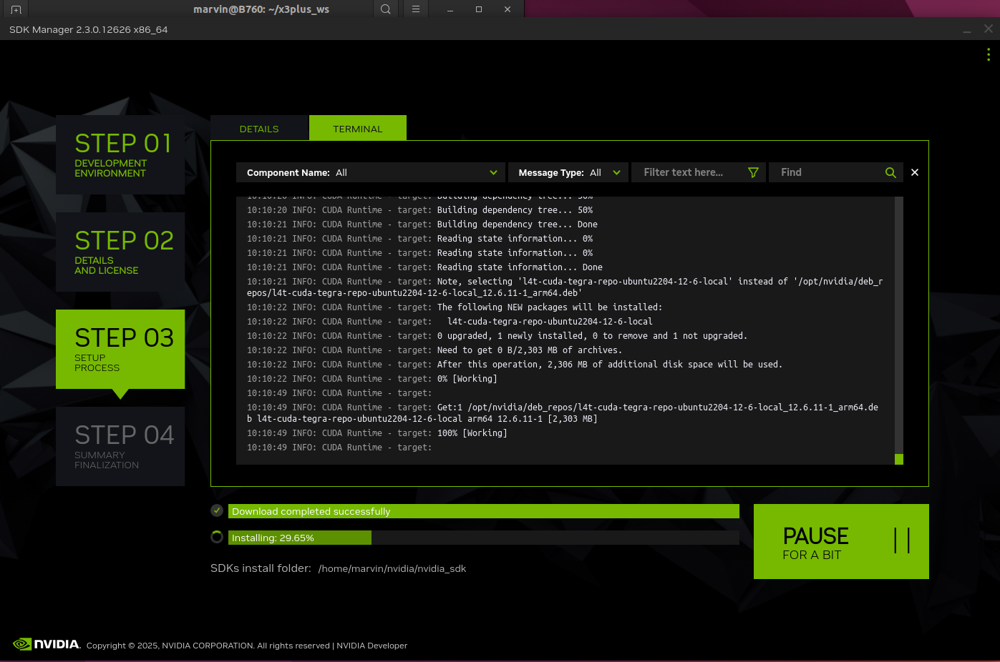
While installation of downloading and installing the SDKs on the Jetson device you can see in ter terminal view the current detailed status.
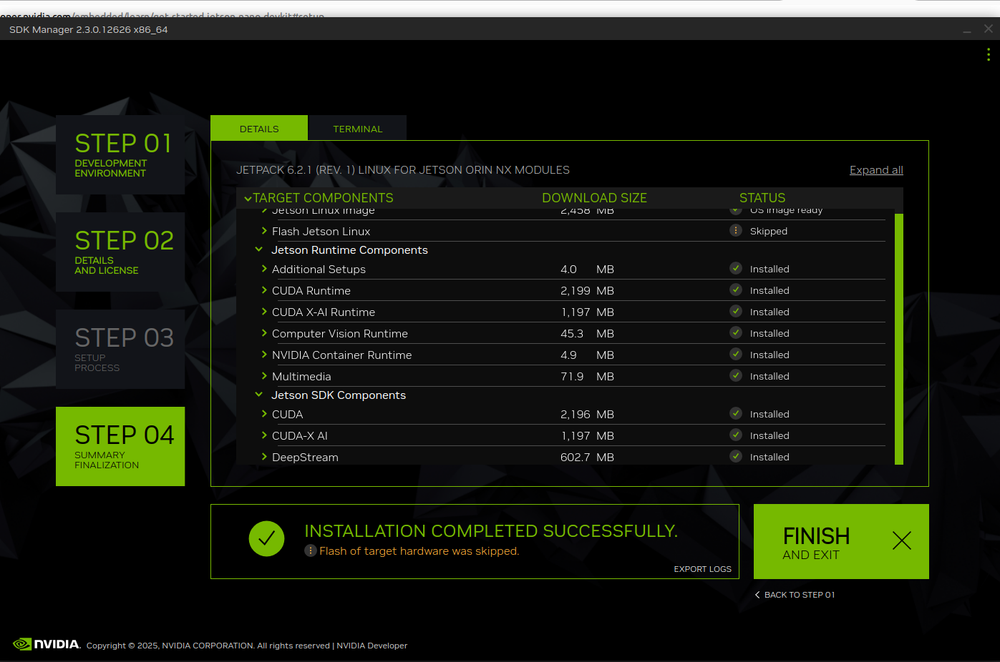
The last step is the acknowledgement of the successful installation.
Making sure CUDA is installed in Jetson Nano
One way is to check if the CUDA compiler is installed and operational
nvcc --version
nvcc: NVIDIA (R) Cuda compiler driver
Copyright (c) 2005-2024 NVIDIA Corporation
Built on Wed_Aug_14_10:14:07_PDT_2024
Cuda compilation tools, release 12.6, V12.6.68
Build cuda_12.6.r12.6/compiler.34714021_0
References
Initial Setup Guide for Jetson Orin Nano Developer Kit
Everything You Need to Set Up Your Development Environment